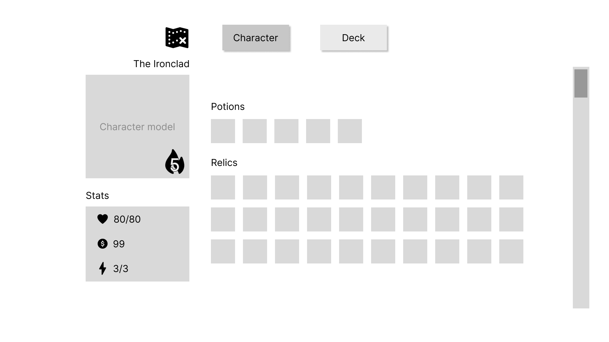
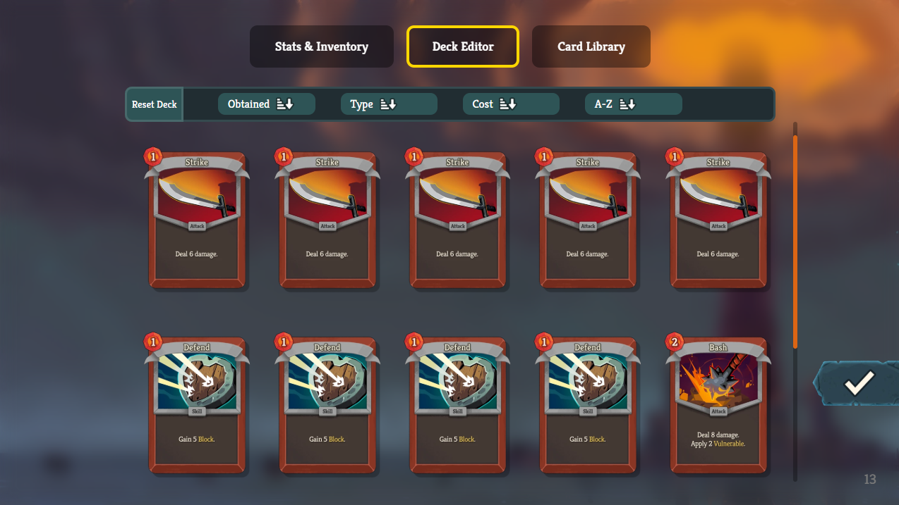
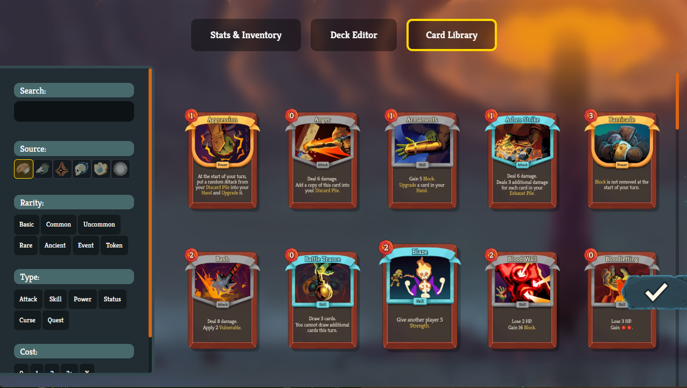

The Idea
Edit the Spire was created to solve a fundamental limitation in traditional roguelike gameplay: rigid progression constraints that gate experiment-heavy playstyles. Standard runs often require hours of grind just to test specific deck synergies, rare relic interactions, or late-game mechanics. The core motivation behind building this desktop app was to hand complete agency back to the player by enabling direct, intuitive save file editing. By granting full control over run parameters such as health, gold, and energy stats, manipulating deck compositions with custom card enchantments, and altering relic or potion inventories on the fly, the app eliminates friction and bypasses RNG bottlenecks. Ultimately, this tool shifts the focus from repetitive grind to restrictionless experimentation, empowering curious players to test niche builds, theorycraft freely, and explore the full breadth of the game's mechanics at their own pace.
The Process
01. Wireframing
Using wireframing as a brainstorming method, alongside research of the current UI.
02. Mockups
Make the transition between wireframes and a polished UI, while honoring the existing styles of Slay the Spire.
03. Structural Build
In HTML/CSS/TypeScript, build the foundational structure of the app and its navigational functionality.
04. Content and Fine-Tuning
Fill in the pages with their fleshed out content and add styling details to make the app feel complete.

Since my partner came to me with the idea, I was able to jump straight into wireframing based off of her initial project vision. In Figma, I made a frame for each page I envisioned the project needing and I put in really low level elements to get an idea of how each would flow into the next. Once I was satisfied with the flow, and my partner gave the go-ahead, I started on the mockups. We wanted this app to feel as similar to the actual game UI as possible. I used the Spire Codex image database to get all of the renders from the game that I needed, and used picked colors from in-game screencaptures, to bring my wireframes to life.
Once the groundwork was complete, I moved to HTML and CSS. I started by defining each page structure before adding details and implementing the core navigation logic to link the views together. After the overall flow of the app was functional, I shifted my focus to rendering and handling the game’s content elements.
To handle the game's extensive inventory system, I structured dedicated TypeScript databases for all relics, potions, and cards. Each item was defined with metadata tags and categories (such as rarity, item type, and character class) allowing the app to read and manage complex save data cleanly.
Using these item definitions, I built custom TypeScript logic to query and render content dynamically based on active user filters. By matching UI commands against item tags, the app can instantly update inventory slot layouts and grid views to display only the relevant cards, relics, or potions a user wants to edit.
To mirror the in-game experience, I created dynamic, hover-activated tooltips that display contextual details for relics, potions, and card enchantments. One of the biggest technical challenges was preventing tooltips from clipping or getting cut off at the edges of their containers. Because the main item grid required a fixed container with vertical scrolling (overflow-y: scroll), standard absolute positioning caused tooltips near the edges to hide behind the scroll container boundaries. I resolved this by decoupling the tooltip rendering from the individual item slots. Using TypeScript and the getBoundingClientRect API, I calculated the precise screen coordinates of the hovered item in real time and positioned a single, globally managed tooltip element relative to the viewport. This allowed the inventory lists to scroll smoothly while ensuring every tooltip remained fully visible and intelligently repositioned itself whenever it approached the edge of the screen.
The Product


By combining an authentic in-game aesthetic with robust client-side logic, Edit the Spire provides players with a comprehensive suite of editing tools for managing their save files:
- Save Management: Easily store, load, and switch between saved runs on any game profile, giving users a centralized hub to backup and tweak different playthroughs.
- Deck Editing & Customization: Full control over the player’s card deck, allowing users to add new cards, prune unwanted ones, and apply custom card enchantments to test specific combat synergies.
- Relic & Potion Storage: Dynamically modify current inventory slots by adding or removing relics and potions to fine-tune character builds.
- Contextual In-Game Tooltips: Integrated hover-activated tooltips that mirror the game’s UI, displaying full descriptions, item names, and enchantment details without breaking the layout flow.
By streamlining save file manipulation into a native-feeling desktop interface, the app bridges the gap between complex save data structures and an intuitive, visual user experience.